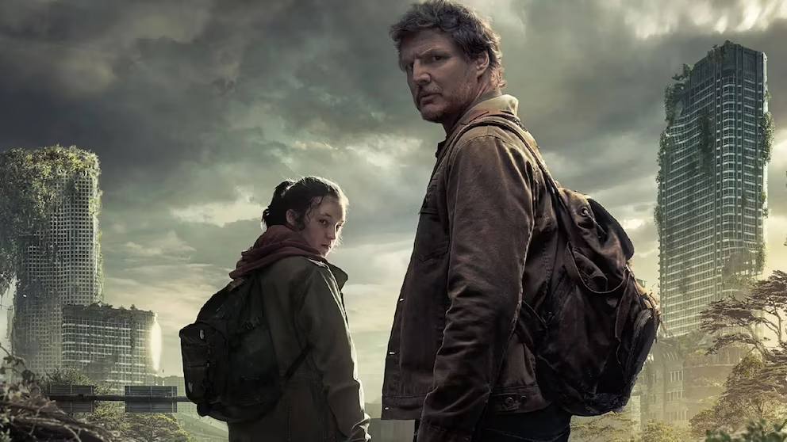

The Last of Us
Es una serie de drama y ciencia ficción basada en el popular videojuego del mismo nombre. La historia sigue a Joel y Ellie en un mundo postapocalíptico devastado por una infección que transforma a las personas en criaturas agresivas. La serie mezcla acción, emoción y fuertes lazos humanos en una lucha constante por la supervivencia.
